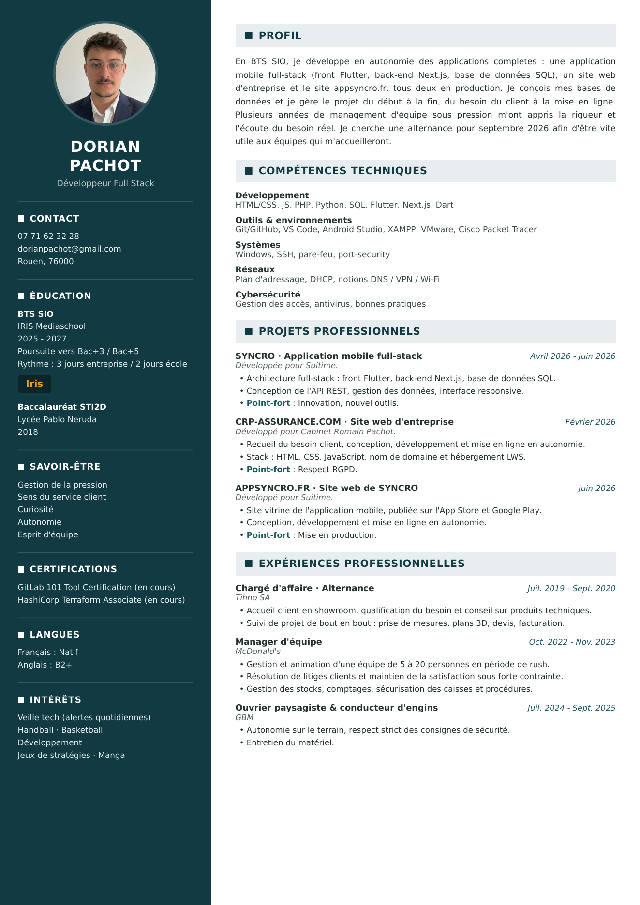

CV
Étudiant en BTS SIO SLAM, en alternance 3 jours entreprise / 2 jours école à IRIS Mediaschool. Le CV est consultable juste en dessous, ou à télécharger en PDF. Mon bulletin de 1re année, ma lettre de recommandation de stage et ma lettre de motivation sont sur la page Documents.
CV de Dorian Pachot

CV mis à jour le 7 août 2026.
Les pièces qui vont avec
Lettre de recommandation de mon stage chez Suitime, bulletin de 1re année et lettre de motivation : tout est sur la page Documents.